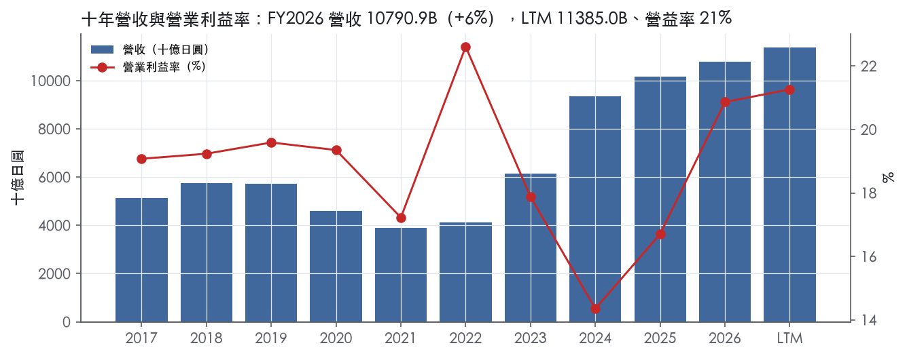
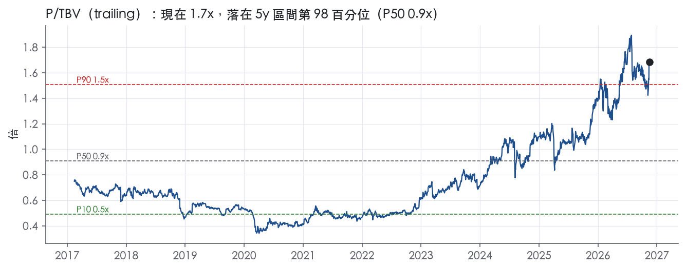
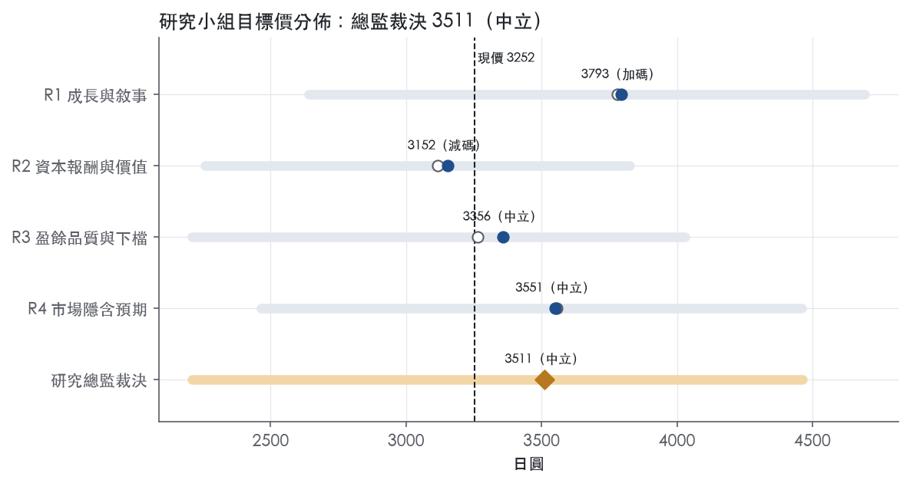

評等總表 › 未分類 › 8316.T
三井住友フィナンシャルグループ（8316.T）
倍數持平扣OCI，報酬近門檻，中性｜評等 中立｜目標價 3432
評等歷史與財報快評
| 報告日 | 評等 | 目標價 | 當時股價 | 超額報酬 |
|---|---|---|---|---|
| 2026-11-16 | 中立 | 3,432 | 3,252 | +0.5% |
| 評等 | 中立 |
| 12 個月目標價 | 3432 日圓 |
| 現價 | 3252.00 日圓（2026-11-16） |
| 預期報酬 | 股價 +5.5%＋股息 2.8%＝總報酬 +8.3%；日股門檻 7.8%，超額 +0.5% |
| 估值方法 | P/TBV 1.6x，套在一年後的有形淨值 |
| 三情境 | 熊 2326／基準 3480／牛 4303 |
| 研究流程 | 四位研究員兩輪辯論＋研究總監裁決 |
| 資料來源 | EDINET、TDnet、J-Quants、Yahoo、FRED（全免費） |
目錄
第一章 結論摘要
倍數持平扣OCI，報酬近門檻，中性（研究總監裁決，四位研究員兩輪辯論後）
評等 中立｜12 個月目標價 3432 日圓（總監三情境機率加權 3440 與研究員中位數 3424 各半）｜現價 3252.00（2026-11-16）
預期報酬：股價 +5.5%＋股息 2.8%＝總報酬 +8.3%。日股門檻 7.8%，超額 +0.5%。
估值方法：P/TBV 1.6x，套在一年後的有形淨值。三情境：熊 2326（27%）／基準 3480（40%）／牛 4303（33%）。
什麼會讓研究總監改變看法：FY2028計畫≥2,100B且FY2027股票等損益<446.1B，倍數移到1.8x轉看多；第三季短信不良債權比率>1.2%（假設門檻）或2026-12日銀不升息，倍數降到1.5x轉看空。
投資論點
- 報酬貼近門檻：含股息總報酬8.3%，只比同業門檻7.8%多0.5%，所以評等中立。
- 倍數不給重估：目標1.65x P/TBV，比現行1.7x低，扣除利率上升與日圓升值造成的有形淨值縮水。
- 信用成本上升：不良債權比率已升到0.97%，倍數又在十年高檔，盈餘落空會連帶壓低倍數。
關鍵數字
| 過去四季（實際，FY2027Q2） | 未來四季 | 第 5–8 季 | 第 9–12 季 | |
|---|---|---|---|---|
| 淨營收（B） | 11,385.0B | 12,409.7B | 13,340.4B | 14,140.9B |
| 淨營收成長 | 12.7% | 9.0% | 7.5% | 6.0% |
| 稅前利益率 | 21.3% | 22.0% | 22.0% | 22.0% |
| EPS（日圓） | 216.93 | 254.70 | 277.95 | 299.08 |
| EPS 成長 | 20.9% | 17.4% | 9.1% | 7.6% |
| 每股股息（日圓） | — | 0.00 | 0.00 | 0.00 |
| ROTCE | 11.3% | 12.6% | 12.6% | 12.3% |
| 每股有形淨值（日圓） | 1929.00 | 2109.20 | 2313.94 | 2541.46 |
| P/E（現價） | 15.0x | 12.8x | 11.7x | 10.9x |
| P/TBV（現價） | 1.7x | 1.5x | 1.4x | 1.3x |
| 股息殖利率（現價） | 2.8% | — | — | — |
過去四季為申報數字；預測為研究總監的假設、程式計算。倍數與殖利率都用現價計算，用來看現價對應各期獲利的高低。
三情境
| 情境 | 機率（歷史） | 故事 | 未來四季營收成長 | 第 5–8 季稅前利益率 | 倍數 | 目標價 | 股價漲跌 |
|---|---|---|---|---|---|---|---|
| 熊 | 27%（23%） | 對應風險表第1條信用風險疊第4條股價風險：停滯性衰退下与信関係費用擴大、股票評價差額金縮水、買回暫停，倍數回到3y P50附近 | 4.0% | 17.0% | 1.1x | 2326 | -28.5% |
| 基準 | 40%（43%） | 日銀2.00終點，資產端重定價快於存款成本，信用成本溫和上升，FY2027淨利落在1,900.00B附近，倍數持平扣OCI壓縮 | 9.0% | 22.0% | 1.6x | 3480 | 7.0% |
| 牛 | 33%（35%） | 日銀升至2.25、春鬪逾5%，批發部門業務純益動能延續，FY2028 ROTE 13%提前可見，倍數重估到1y P90之上 | 12.0% | 24.5% | 2.0x | 4303 | 32.3% |
目標價由程式依研究總監的驅動與倍數計算；機率由研究總監給定。括號內是歷史頻率：把這檔股票過去十年 12 個月報酬的波動形狀，置中在基準情境，結果落在各情境附近的比例。

四位研究員用不同方法各自估值，回應研究總監的質疑後交出第二輪，最後由總監逐點裁決。各研究員的主張見第七章，裁決理由見第八章，完整論證見《研究底稿》。
| 立場（一輪→二輪） | 加權目標價（一輪→二輪） | 評等（一輪→二輪） | 第二輪倍數 | 熊～牛目標價 | |
|---|---|---|---|---|---|
| R1 成長與敘事 | 看多→看多 | 3739→3568 | 加碼→中立 | 1.7x | 2766～4303 |
| R2 資本報酬與價值 | 中性→看空 | 3136→3120 | 減碼→減碼 | 1.5x | 1998～4102 |
| R3 盈餘品質與下檔 | 中性→看空 | 3189→3281 | 減碼→中立 | 1.6x | 2326～3946 |
| R4 市場隱含預期 | 看多→看多 | 3732→3728 | 加碼→加碼 | 1.8x | 2693～4527 |
| 研究總監裁決 | 中性 | 3432 | 中立 | 1.6x | 2326～4303 |
目標價由程式依各自的驅動與倍數計算；評等＝機率加權總報酬 − 日股門檻。
第二章 業務概況
公司做什麼、賣給誰
三井住友金融集團（SMFG）是以銀行業為核心、橫跨租賃、證券、消費金融與系統開發等金融服務業的綜合金融集團。集團由184家合併子公司與252家權益法適用公司組成，核心營運主體為株式會社三井住友銀行。客戶涵蓋國內大企業、中堅中小企業、個人客戶，以及海外日系與非日系法人。公司將中長期願景定為「連結世界的日本發起可信賴夥伴」（世界をつなぐ日本発のトラステッド・パートナー）。FY2026 LTM 營收規模達 11,385.05B，是日本三大行之一，規模與國內經濟景氣、全球資金流動高度綁定。
業務分部與產品
集團依客群劃分五大報告分部：批發事業部門（國內大企業與中堅中小企業）、零售事業部門（國內個人客戶）、全球事業部門（海外日系與非日系企業客戶）、市場事業部門（金融市場業務）、本社管理。FY2026（2025年4月至2026年3月）合併毛利為 4,844.69B，其中零售事業部門毛利 1,555.6B 為最大分部，全球事業部門 1,550.9B 緊追在後，批發事業部門 1,253.4B，市場事業部門 697.8B。以合併業務純益（連結業務純益）衡量，批發事業部門 997.1B、全球事業部門 655.8B、市場事業部門 508.7B、零售事業部門 427.7B，合計 2,330.89B，較前一年度（FY2025）的 1,719.29B 明顯擴大。批發與零售部門的業務純益成長最快，批發部門年增逾三成、零售部門年增約五成，顯示國內兩大客群部門是本期獲利擴張的主引擎。產品線除傳統存放款、外匯、資金市場業務外，集團旗下還有 SMBC 日興證券（證券業）、三井住友卡（信用卡業務）、SMBC Consumer Finance（消費金融業務）、日本總合研究所（系統開發與顧問）等子公司，構成銀行＋非銀行金融服務的綜合體。
客戶、地區與通路
地區結構以日本本土為主，海外營收佔比約三成，FY2026 經常收益中日本 5,051.76B、美洲 2,568.46B（其中美國單獨為 2,308.69B）、歐洲中近東 1,487.78B、亞洲大洋洲 1,682.85B，合計 10,790.85B。相較 FY2025 的日本 4,540.24B、美洲 2,496.56B（美國 2,273.4B）、歐洲中近東 1,471.31B、亞洲大洋洲 1,666.79B，四個地區普遍成長，日本本土成長最明顯。公司未揭露單一客戶占比達合併經常收益10%以上者，顯示客戶集中度不高、分散度大。通路方面，個人數位金融服務「Olive」是零售部門差異化工具，集團與 SBI Holdings 締結資本業務合作，持股自2,700萬股增至5,400萬股、帳面價值 153.85B，雙方在個人數位金融領域深化合作。海外通路則透過美洲、歐洲、亞洲多個子銀行與證券法人（如 SMBC Bank International plc、SMBC（中國）有限公司、PT Bank SMBC Indonesia Tbk 等）直接服務當地日系與非日系客戶。
最近四季發生了什麼
近四季營收與獲利呈持續成長但波動較大的格局。FY2026Q3（2025年12月底）營收 2,728.48B，年增 14.9%，營益率 22.8%，淨利 461.26B。FY2026Q4（2025年4-2026年3月期末季，2026年3月底）營收 2,856.49B，年增 13.2%，但營益率降至 14.2%，淨利僅 188.21B，季節性季末費用與信用成本壓縮了獲利率。進入 FY2027（2026年4月起新財年）首季 FY2027Q1 營收 2,850.43B，年增 16.6%，營益率回升至 24.3%，淨利 501.37B，是近四季單季獲利最高的一季。FY2027Q2（2026年9月底）營收 2,949.66B，年增 6.8%，營益率 23.8%，淨利 501.78B 與前季相當。公司最新決算短信揭示上半年（2026年4-9月）累計歸屬母公司淨利 1,003.155B，較去年同期 933.505B 成長，經常利益 1,395.603B 較去年同期 1,278.123B 成長，資金運用收益、役務取引等收益、特定取引收益均較去年同期增加。資金調達費用同步上升，反映存款利息成本（うち預金利息）自 832.295B 增至 1,004.383B，顯示利率環境上升對負債端成本的影響。公司公布本年度（FY2027）全年計畫歸屬母公司淨利 1,900.00B、每股盈餘 250.84 日圓；以上半年累計 1,003.155B 推算，下半年仍需獲利約 896.85B 才能達標，相較上半年的強勁表現，公司計畫隱含下半年成長動能略為放緩，可能反映一次性因素與審慎假設。
公司自己說的成長引擎與策略
公司訂立2028年度為期的三年中期經營計劃，基本方針為「挑戰向上的大膽變革」，目標是實現媲美歐美大型金融機構的獲利水準。財務目標設定 FY2028 合併 ROTE（扣除無形資產影響的有形股東權益報酬率）達13%以上、普通股權第一類資本比率約10.5%，並規劃透過事業組合變革將 RORA（風險加權資產報酬率）改善0.5個百分點，將底線利潤推升至約2,000.0B規模。中長期收益性目標進一步設定為 ROTE 約15%，對標歐美大型金融機構水準。事業戰略上，公司強調強化 S&T（證券與信託）業務以提升資本市場存在感、推動亞洲投資成果落地、對海外法人貸款業務進行根本性資產置換以提升海外事業獲利能力，並擴大資本效率較高的資產管理與支付業務。IT轉型方面，公司規劃三年內投入規模達1,000.0B的IT投資，推動雲端化等IT基礎設施根本性革新，並加速生成式AI的應用。政策性持股（政策保有株式）削減方面，公司在2024年11月公布以2024年3月底為基準、五年內削減600.0B（國內上市股票、取得原價）的計畫，FY2025（2025年度）已削減約124.0B，前一年度（FY2024）削減約185.0B，公司並設定本期中期計劃期間（2026-2028年度）內將合併政策保有股票時價餘額佔合併淨資產比重降至20%以下的目標。整體看，SMFG 的成長引擎明確放在「海外資產重新配置＋資本效率提升＋數位平台（Olive）帶動零售成長」三條線上，而非單純放大資產負債表規模。公司全年計畫（歸屬淨利1,900.0B）相對上半年累計1,003.155B與近四季動能，顯得偏保守，符合日本公司期初計畫普遍留有上修空間的慣例。政策持股削減與資本效率改善若持續兌現，將是支撐 ROE／ROTE 重估、股價維持在高 P/B 區間（現為 1.7x，處於五年分位97.6%）的關鍵變數。

第三章 經濟護城河
結論：無，趨勢變寬
三井住友 FG 確實有競爭優勢，但過去十年這些優勢沒有換成高於資本成本的股東報酬，所以我們沒有把握 ROE 會持續高於資本成本，評級給「無」。ROE 最新值 10.4% 是十年最高。日本利率正常化、政策保有株式削減、中期計畫的 ROTE 目標，三者方向一致，因此趨勢判為變寬。若後續數個年度 ROE 穩定站在資本成本之上，我們會上修到「窄」。
優勢來源
優勢來自三類：無形資產（授權與信用）、轉換成本、成本優勢。
無形資產（授權）
- 集團由合併子公司 184 家、權益法適用公司 252 家組成。
- 在英國、德國、中國、印尼、美國、巴西、馬來西亞等地設有銀行子公司。
- 跨國銀行執照與監理資本門檻讓新進者難以複製。不過國內其他大型銀行同樣具備這些條件，所以這是進場門檻，不是超額報酬的來源。
轉換成本
- 批發事業部門的連結業務純益由 729.2B 增至 997.1B。
- 政策保有株的持有目的，多數寫明是「維持、強化存款、融資、匯兌等金融相關交易關係」。
- 三井住友銀行持有純投資目的以外的上市股票 663 檔，帳面金額 3,457.58B。
- 法人客戶的存款、結算、外匯與融資綁在同一家主力銀行，換銀行的成本高。但其中一部分黏著度是靠交叉持股換來的，這些持股本身佔用資本、拉低 ROE。
成本優勢（規模）
- 公司計畫三年投入 1,000B 規模的 IT 投資。
- FY2026 設備投資總額 477.52B。
- 公司目標是經費率維持在 50% 台前半。
- 公司以數位平台「Olive」作為與競爭對手差異化的工具。
- 中小型銀行負擔不起同等規模的 IT 與合規支出，規模經濟在數位化階段被放大。
數字上看得到嗎
看不到，量化底稿與「有護城河」的主張直接衝突。
- ROE 十年平均 7.0%，資本成本代理值 10.1%，平均差距 -3.1%；有資料的 9 年中只有 1 年高於資本成本。
- ROE 標準差 1.5%、最低 4.5%、最高 10.4%。
- 稅前利益率十年平均 18.7%、標準差 2.2%、最低 14.4%、最高 22.6%。
- 利潤率波動不大，表示業務組合穩定，但它穩定在低於資本成本的報酬水準，這是「有生意、沒護城河」的典型特徵。
- 資料包 ROIC 欄 FY2026 為 -5.4%。銀行以存款為負債主體，淨負債為負，這個口徑失真，我們不採用。
有兩點讓我們不把差距視為定局：
- 資本成本代理值以美國 10 年債 5.1為基礎，日本 10 年公債是 2.841。材料裡沒有本行日本總經前提，我們假設日圓股權成本低於代理值，但無法量化。
- 公司以 RARORA 檢驗政策持股，採算基準設在高於公司資本成本的水準。
即使放寬代理值，ROE 十年最低 4.5%、平均 7.0% 的軌跡仍不足以支持「有把握」。最新的 10.4% 和日本利率上升同時出現，是週期紅利還是結構性改善，需要更多年度才能驗證。
什麼會侵蝕它
最大威脅是利率紅利反轉，以及數位競爭者侵蝕零售與結算業務的利潤。
- 數位競爭：平台業者、Fintech 與異業企業正以 AI 提供金融服務並強化顧客接點。
- IT 投資的雙面性：公司自己承認，運用科技的優劣將大幅左右金融機構的競爭力。1,000B 的 IT 投資因此是防守門檻；若回報不如預期，規模優勢會變成固定費用負擔。
- 政策持股削減：公司計畫自 2024 年 3 月底起五年削減 600B，2024 年度已削減約 185B、2025 年度約 124B。當年度三井住友銀行賣出上市股票 267 檔，賣出金額 566.78B。這對資本效率是正面，但交叉持股綁住的交易關係會鬆動，轉換成本的一部分會流失。
- 海外業務：公司要對海外法人貸款業務做根本性的資產置換，以提升海外事業收益性。海外貸款缺乏本地低成本存款，屬同質化業務，沒有成本優勢。
- 總經不確定性：中東情勢緊張帶動資源價格高漲，加上各國政治不安定，經營環境的不透明感升高。信用週期惡化時，稅前利益率可回到十年低點 14.4%。
對估值的含意
目標倍數相對同業應持平，不給護城河溢價。十年 ROE 平均低於資本成本代理值，而現在 P/TBV 1.7x 位於 5 年分位 97.6%、高於 5 年 P90 1.5x，P/E 15.0x 也高於 5 年 P50 12.8x，市場已提前定價 ROE 改善。要支撐高於同業的倍數，必須看到 ROE 連續數年站上資本成本，並朝公司 2028 年度 ROTE 13% 以上的目標兌現；屆時再重估評級與倍數。
量化底稿：報酬率與利潤率的水準與穩定度
| 指標 | 最新 | 十年平均 | 標準差 | 最低 | 最高 |
|---|---|---|---|---|---|
| ROE | 10.4% | 7.0% | 1.5% | 4.5% | 10.4% |
| 稅前利益率 | 20.9% | 18.7% | 2.2% | 14.4% | 22.6% |
| 淨營收成長 | 6.1% | 11.0% | 23.6% | -19.9% | 52.3% |
程式計算。資本成本代理值（10 年債＋5%）：10.1%；ROE 十年平均減資本成本：-3.1%；ROE 有資料的 9 年中，高於資本成本 1 年。
第四章 財務體質與盈餘品質
結論：中品質，核心盈餘增長扎實但FY2026現金流由CF會計口徑扭曲、信用成本上升需留意
LTM淨利1,582.97B、EPS 205.94，連結業務純益年增611.6B至2,330.9B，盈餘成長主要來自資金運用收支與役務取引收支擴大，屬核心本業收益。但FY2026營業活動現金流為-10,283.14B（dv.cf），主要是銀行業存放款規模變動的會計特性而非盈餘品質惡化。股東回饋比率（股利＋回購）／淨利 LTM 47.8%、近三年54.8%，燈號黃但在銀行業屬合理範圍【判，量化底稿】。
現金有沒有跟上盈餘
LTM自由現金流為-10,760.66B，與GAAP淨利1,582.97B方向相反，差距巨大【判，量化底稿】。這主要反映銀行業CFO定義包含存款、放款、有價證券等資產負債表項目的淨變動，當期貸出金餘額較前期增加6,493.0B，預金同期增加14,175.6B，這些資產負債表擴張會計上列為CFO流出或流入，與一般工業公司「現金轉換率」概念不適用。短信揭露當期（上半年）投資活動現金流為+3,254.2B，部分抵銷營業現金流出。期末現金及現金同等物餘額較前期末減少6,755.9B，期末餘額59,431.8B，流動性仍充裕。本系統對銀行業不採用「現金轉換率≥1」作為品質判準，因CFO結構性由存放款規模決定。
公司調整了什麼（GAAP 與非 GAAP 的差距）
決算短信本身無美式非GAAP調整項目揭露，公司以日本準則下的「經常利益」「連結業務純益」為管理指標，而非額外剔除SBC、攤銷等項目。特別損益當期為-51.6B，其中美州銀行子公司出售相關損失-46.1B、階段取得相關損失-1.4B屬一次性項目，這類處分損益應視為非經常性，予以剔除後核心盈餘更乾淨。股票等損益（含政策保有股處分）當期為446.1B，其中Kotak Mahindra Bank股權出售收益部分為真實變現收益，但政策保有股處分收益隨政策保有股削減會逐年減少，屬結構性遞減而非一次性雜訊。
資產負債表與資本配置
股東權益合計15,933.1B，其中股東資本合計11,752.0B。普通股權一級資本比率10.3%（已扣除其他有價證券評價差額金），公司中期計畫目標為10.5%左右，顯示資本仍在建構期。不良債權比率由0.67%上升0.30個百分點至0.97%，保全率由60.92%提升至69.48%，風險覆蓋尚可但惡化方向需追蹤。資本政策明確：配當比率40%、原則逐年增配，2026年度配息預計較前期增加23円至180円；庫藏股買回方面5月已宣布180.0B並可能期中追加。政策保有股削減持續推進，計畫在中期經營計畫期間內將政策保有股時價佔淨資產比例降至20%以下，這會逐步壓縮股票等損益中的處分收益貢獻。
紅旗逐條說明
- SBC／營收 燈號缺值：量化底稿顯示SBC相關資料全部「—」，無法評估股權酬勞對營收的侵蝕。日本銀行業股權薪酬佔比普遍低、且本系統本不加回SBC，缺值對盈餘品質判斷影響有限，但仍是底稿缺口而非可解釋的假警報。
- 稀釋股數年變動 -0.3%（LTM）、近三年-2.1%、十年-0.7%，燈號綠：非紅旗，反映庫藏股買回持續減少股數，與本中期計畫中庫藏股買回（180.0B）及前期3年計畫650.0B的買回規劃一致，屬真實股東回饋行為。
- （股利＋回購）／淨利 LTM 47.8%、近三年54.8%、十年46.3%，燈號黃：此為會計口徑假警報而非真問題。日本銀行股配息比率目標即設定在40%，加上庫藏股買回後總回饋率落在47%–55%區間屬公司既定政策範圍內的正常波動，而非舉債過度回饋（淨負債未見惡化、CET1比率穩定在10.3%附近）。
- 程式隱含之現金流紅旗（FCF/CFO為大幅負值）：屬銀行業CFO會計口徑的結構性特徵，非盈餘造假或現金枯竭訊號。真正該留意的是信用成本上升：与信関係費用年增43.9B，主要因中東局勢惡化計提前瞻性準備，以及不良債權比率上升0.30個百分點，這是需要持續追蹤的真實風險訊號而非假警報。
對估值的含意
估值應以GAAP歸屬母公司淨利為基礎，但建議剔除股票等損益中的政策保有股處分收益與一次性處分損失（美州銀行子公司出售損失46.1B等），因前者將隨政策保有股削減計畫逐年遞減、後者為非經常項目。CFO/FCF的大幅負值不應作為銀行業盈餘品質的扣分依據，不建議對盈餘因此打折。不良債權比率上升與信用成本增加是温和的風險訊號，建議在估值情境中對未來信用成本假設保守一檔，但CET1比率10.3%與保全率69.48%尚不構成限制估值倍數的槓桿風險。
量化底稿：盈餘品質計分表
| 項目 | LTM | 近三年 | 十年 | 燈號 | 規則 |
|---|---|---|---|---|---|
| SBC／營收 | — | — | — | — | ≤3.0% 綠、>8.0% 紅 |
| 稀釋股數年變動 | -0.3% | -2.1% | -0.7% | 綠 | ≤0.0% 綠、>3.0% 紅 |
| （股利＋回購）／淨利 | 47.8% | 54.8% | 46.3% | 黃 | ≥50.0% 綠、<0.0% 紅 |
程式計算；燈號以 LTM（無則近三年平均）判定。銀行的現金流、淨負債、利息保障是本業，不列入。
第五章 主要風險
結論：最大的風險是信用成本在景氣反轉時急速放大，疊加公司已處於歷史高分位的 P/TBV（1.7x，五年分位 97.6%），一旦 ROE／資本敘事受挫，倍數重估的下行空間比盈餘下行空間更大。
五大風險表
| 風險 | 觸發指標（看什麼數字、在哪裡看） | 對 EPS 的影響方向與粗略幅度 | 未來 12 個月發生機率 | 出處 |
|---|---|---|---|---|
| 信用風險：取引先業況惡化推升與信關連費用 | 貸倒引当金餘額（短信資產負債表，FY2026 期末 1,007.469B→FY2027H1 863,513M）、每季決算短信「与信関係費用」揭露 | 負向，幅度中－大；FY2026Q4 單季營益率從 22.8% 降至 14.2%、淨利從 461.26B 降至 188.21B 已顯示信用/季末費用衝擊 | 中 | |
| 市場風險：利率急速變動導致有價證券評價損 | 日本10年期公債利率（jgb10y，現 2.841）、その他有価証券評価差額金（短信，FY2026期末 2,116.878B→FY2027H1 2,059.417B，半年已降 57.461B） | 負向，幅度中；評價差額金半年已縮水，若利率持續上升將繼續侵蝕淨資產與資本比率 | 中 | |
| 流動性風險：外幣調達環境急速惡化 | 日圓兌日圓（usdjpy 現 158.23）、公司/子行信用評等異動公告、資金調達費用（短信「資金調達費用」半年由 2,235.764B 增至 2,334.776B） | 負向，幅度中；資金調達費用上升已侵蝕利差，極端情境下外幣調達成本可能跳升 | 低 | |
| 股價變動風險：政策保有股削減與大盤下跌雙重壓力 | 日經/TOPIX走勢、政策保有股時價餘額佔合併淨資產比重（公司目標2028年度降至20%以下）、その他有価証券評価差額金 | 負向，幅度中；削減過程本身可能產生賣出損失，且取引先拋售公司股票反向壓低股價 | 中 | |
| 自己資本比率／TLAC規制未達標風險 | 普通股權第一類資本比率（公司目標約10.5%）、外部TLAC比率、金融庁命令或行政處分公告 | 負向，幅度大但機率低；觸發後可能直接限制業務擴張與股東回報 | 低 |
逐條說明
信用風險是五條中機率與影響乘積最高的一項。有報明確點名「取引先の業況の悪化」、「他の金融機関における状況の変化」會導致貸倒引當金與不良債權增加，影響經營成績及財政狀態。從數字看，FY2026Q4 單季營益率驟降至 14.2%、淨利僅 188.21B，遠低於同年度其他三季（FY2027Q1、FY2027Q2 均在 460–560B 區間），顯示季末信用成本與費用計提對單季獲利的衝擊可以非常劇烈。監測方式是每季決算短信揭露的貸倒引当金餘額變化與與信關係費用科目。
市場風險（利率）同樣值得緊盯。有報指出持有的國債等市場性債券因主要國家貨幣政策變更、債券評等下調等原因，可能產生大額賣出損失或評價損。短信數據顯示，其他有價證券評價差額金半年內已由 2,116.878B 降至 2,059.417B，減少 57.461B，同時繰延ヘッジ損益由 -300.715B 擴大至 -551.918B，合計其他包括利益累計額半年縮水 412.387B。在日本利率正常化、jgb10y 現 2.841 的環境下，這條風險是結構性而非一次性的。
流動性風險聚焦海外日圓調達。有報點名集團評等下調會使海外資本與資金調達條件惡化。短信顯示資金調達費用（含預金利息）半年由 2,235.764B 增至 2,334.776B，其中預金利息由 832.295B 增至 1,004.383B，顯示存款端成本已明顯上升。在 usdjpy 158.23 的高位，若日圓流動性緊縮，調達成本可能進一步跳升。
股價變動風險與公司自身的資本政策綁在一起。有報坦言政策保有股削減計畫本身可能產生「売却損失」，且取引先出售公司股票也會壓低自家股價。公司設定 2028 年度前將政策保有股時價餘額佔合併淨資產比重降至 20% 以下，這個過程本質上是用短期波動換長期資本效率，一旦大盤同期走弱，兩者會疊加放大損失。
自己資本比率／TLAC 規制風險影響幅度最大但機率最低，列第五。有報說明若普通股權第一類資本比率或外部 TLAC 比率低於要求水準，金融庁可對集團發出業務縮小、新規業務禁止等命令，直接限制業務運作。目前公司中期計劃目標普通股權第一類資本比率約 10.5%，屬自主設定的緩衝水準，短期內觸及法定下限的機率不高。
公司沒寫、但我們認為該注意的
估值已處於歷史高位，任何盈餘不及預期都可能觸發倍數壓縮而非單純盈餘修正。目前 trailing P/E 15.0x 處五年分位 76.6%、P/TBV 1.7x 處五年分位 97.6%，遠高於 10 年中位數（pe 8.7x）。市場目前把 SMFG 當作「ROE 重估故事」在定價，一旦公司全年計畫（歸屬淨利 1,900.0B、EPS 250.84）不能兌現或下半年獲利動能不如上半年（上半年已達 1,003.155B，下半年僅需 896.85B 即可達標，隱含成長放緩），市場可能同步修正盈餘預期與倍數，跌幅會比單純 EPS 下調更劇烈。
日本總經與財政風險（JGB 利率、日本財政不安）對銀行股的雙面性未被充分量化。有報的「トップリスク」清單列出「日本の財政不安」、「日本經濟的停滞」等情境，但未給出對集團損益的具體敏感度。長期利率上升短期內壓低既有債券持倉的評價（已反映在評價差額金縮水），但中長期有利於存貸利差擴大；若利率上升速度過快（而非溫和正常化），評價損的衝擊可能先於利差改善顯現，形成獲利與資本的「青黃不接」期，這是監測 jgb10y 走勢節奏時需要特別留意的面向。
第六章 市場在定價什麼
現價 3252.00 對應 trailing（過去四季）P/E 15.0x、P/TBV 1.7x（ROTCE 11.3%）、股息殖利率 2.8%。主要估值倍數 P/TBV 現在 1.7x，落在5 年區間第 98 百分位（P10／P50／P90 = 0.5x／0.9x／1.5x）。

把程式的機械基準預測放到現價下，市場付的前瞻倍數是：P/TBV（未來四季） 1.5x、P/E（未來四季） 13.0x、P/TBV（第 5–8 季） 1.4x、P/E（第 5–8 季） 11.9x。
| 倍數 | 現在 | 5 年 P10 | 5 年 P50 | 5 年 P90 | 現在分位 | 全期 P50 |
|---|---|---|---|---|---|---|
| P/E | 15.0x | 7.7x | 12.8x | 15.7x | 76.6% | 8.7x |
| P/TBV | 1.7x | 0.5x | 0.9x | 1.5x | 97.6% | 0.7x |
trailing 倍數（股價 ÷ 過去四季）；分位以每個交易日計算。
（日股同業籃尚未建置：評等門檻用日股絕對門檻＝日本 10 年公債＋股權風險溢酬 5%，見首頁。）
程式的機械基準（成長率從過去四季年增率三年收斂到 6%、利潤率持平）用 P/TBV 5 年 P50（trailing） 估值得到 1913（-41.2%），用現行倍數得到 3547。這兩個數字只是參考點，不是本報告的目標價；研究員對這個定價的回應在第七章。
第七章 四位研究員的看法
下表是每位研究員第一輪（各自獨立）與第二輪（回應研究總監的質疑後）的結果。目標價全由程式依各自的假設計算。
| 立場（一輪→二輪） | 加權目標價（一輪→二輪） | 評等（一輪→二輪） | 第二輪倍數 | 熊～牛目標價 | |
|---|---|---|---|---|---|
| R1 成長與敘事 | 看多→看多 | 3739→3568 | 加碼→中立 | 1.7x | 2766～4303 |
| R2 資本報酬與價值 | 中性→看空 | 3136→3120 | 減碼→減碼 | 1.5x | 1998～4102 |
| R3 盈餘品質與下檔 | 中性→看空 | 3189→3281 | 減碼→中立 | 1.6x | 2326～3946 |
| R4 市場隱含預期 | 看多→看多 | 3732→3728 | 加碼→加碼 | 1.8x | 2693～4527 |
| 研究總監裁決 | 中性 | 3432 | 中立 | 1.6x | 2326～4303 |
目標價由程式依各自的驅動與倍數計算；評等＝機率加權總報酬 − 日股門檻。
分歧度：第一輪 加權目標價 3136～3739（區間＝現價的 19%）· 倍數 1.5～1.8x · 立場 看多×2、中性×2；第二輪 加權目標價 3120～3728（區間＝現價的 19%）· 倍數 1.5～1.8x · 立場 看多×2、看空×2。

| 研究員 | 第二輪主張 | 堅持的理由 |
|---|---|---|
| R1 成長與敘事 | 小幅偏多，目標1.7x，等於現行倍數一年後持平。 | 日銀升到2.00會擴大存放利差，處分收益減少不足以壓低倍數。 |
| R2 資本報酬與價值 | 偏空，目標1.5x，等於過去一年市場付的中位數。 | 平均ROTCE 9.5%在不良債權升、備抵降時取得，被低撥備墊高。 |
| R3 盈餘品質與下檔 | 相對偏空，目標1.6x，扣有形淨值縮水與備抵疑點各0.05x。 | 年底費用連兩年集中在第四季，全年利益率不給到上半年水準。 |
| R4 市場隱含預期 | 溫和偏多，目標1.8x，市場低估升息後的持續獲利。 | 市場前瞻倍數1.5x隱含ROTCE低於9.5%，他認為升息後獲利是新常態。 |
每位研究員的逐條回應與完整論證見《研究底稿》（8316.T_研究底稿_2026-11-16.docx）。
第八章 研究總監裁決
分歧登記
| 分歧點 | R1 | R2 | R3 | R4 | 什麼資料會分出勝負 |
|---|---|---|---|---|---|
| ① 目標 P/TBV：11 季平均 ROTCE 9.5% 可持續、被墊高或低估 | 1.7x，現行持平即程式合理值 | 1.5x（1y P50），9.5% 被低撥備墊高、g 貼近 r | 1.6x，扣 OCI 與備抵背離各 0.05x | 1.8x，市場前瞻 1.5x 隱含持續 ROTCE 低於 9.5% | 2027-05-20 FY2027 決算：淨利 ≥1,900.00B 且股票等損益 <446.1B；FY2028 計畫是否 ≥2,100B |
| ② 稅前利益率 y2／y3 | 22.5／23.0 | 21.3／20.3 | 21.5／21.5 | 22.5／23.0 | FY2027Q4 單季營益率；FY2028 計畫對照中計約 2,000.0B |
| ③ 備抵下降對不良債權上升 | 動用已提列準備 | 覆蓋下降即 ROTCE 墊高 | 未釐清，扣 0.05x | 信用成本升，壓倍數上限 | 2027-02-15 第三季短信：与信関係費用、不良債權比率、備抵增減明細 |
| ④ NTM 營收成長 | 9.0% | 10.4% | 9.0% | 8.0%（海外過半，逆風加倍） | 九個月累計経常収益年增率；日圓是否循 153 |
| ⑤ 熊情境機制與底部 | 第 1 條，1.35x | 無風險表，1.0x | 第 1＋4 條，1.15x，買回暫停 | 第 2 條，1.3x | 2026-12 日銀決議；Baa 利差對照 1.75；第三季不良債權比率 |
逐點裁決
① 倍數：own，1.65x。 起點是 R1 的 1.7x——它同時是現行 trailing、程式以 9.5% 算的合理值、1y P90。R2 的 1.5x 立在「9.5% 被低撥備墊高」，但短信流量方向相反：上半年その他経常費用 190.59B→274.24B（信用成本在升）、その他経常収益 398.71B→341.62B（迴轉與處分收益在降），經常利益仍由 1,278.12B 升到 1,395.60B。11 季平均含 FY2026 股票等損益 446.1B（偏高），也含本輪升息前政策利率低於現在 1.25 的多個季度（偏低），兩者相抵。R4 的 1.8x 方向我同意——市場前瞻 1.5x 低於 9.5% 對應的 1.7x——但 1.8x 高於 1y P90，要 FY2028 計畫 ≥2,100B 證明持續 ROTCE 高於平均，資料 2027-05 才有，而不良債權比率已升到 0.97%。R1 漏的是模型 TBV 不滾動 OCI：本行前提 JGB 2.84→3.00、日圓 158.2→153.0 都壓 TBV，曝險是繰延ヘッジ損益 −551.92B、為替換算調整勘定 1,633.11B，上半年 OCI 累計額已縮水 412.39B。R3 以約 300B（R3 假設）對 NTM TBV 15,752.83B 扣 0.05x，接受；他另以「JGB 3.00 高於計算用的 2.84」壓合理值，是利率重複計算，退回；備抵折讓見③，退回。
② 利益率：own，y1 22.0%，y2／y3 22.0%。 y1 三人一致；R2 沿用的 21.3% 含 FY2026Q4 14.2%的美州子行出售損 46.1B 與中東前瞻性準備，基期被壓低，且他的營業利益誤差中位數 −4.8% 是四人最偏低（紀錄表）。y2／y3 兩邊都不夠：R1／R4 擴張到 23.0%，但上半年営業経費 1,228.79B→1,412.78B 的增幅高於経常収益 5,205.89B→5,800.08B 的增幅，三年 1,000B IT 投資在前，中計 FY2028 底線利潤約 2,000.0B對 FY2027 計畫 1,900.00B，公司自己沒假設擴張；R3 收到 21.5%，卻忽略 2027-06 最後一次升息的全年化落在 Q5–Q8（本行日本前提），且他和本部都系統性低估營業利益（R3 −3.3%、總監 −2.4%）。依基準「持平」規則套在清理後的 22.0%。
③ 備抵：growth。 備抵 1,007.47B→863.51B 在 FY2027 上半年，不良債權比率 0.67%→0.97% 在 FY2026，期間不同；同期その他経常費用上升、為替換算調整勘定減少 73.84B（日圓升值縮小外幣備抵），與「動用準備加匯率」相容，與「迴轉墊高」不相容。R2 只看到我轉發的存量；R3 的「未釐清」合理，但折讓要有方向證據。
④ 營收：quality，y1 9.0%、y2 7.5%。 R4 把匯率逆風加倍，因海外佔比由三成修為過半（日本 5,051.76B 對合計 10,790.85B），但本行前提的日圓升幅不變，權重修正不該把 y1 砍到 8.0%。R2 的 10.4% 是 LTM 外推，沒處理 FY2027Q2 年增已降到 6.8%與匯率。y2 7.5%：日銀 2.00 是終點，Q5–Q8 只剩最後一次升息的全年化，之後回到量的成長（日本 GDP 0.7）。
⑤ 熊情境：quality。 本行下行路徑是停滯性衰退、Baa 利差 2.30、失業率 5.1、日銀停在 1.50、JGB 降到 2.30。對 SMFG 先打到的是信用成本（風險表第 1 條，機率中、影響中－大）與股票評價差額金 2,059.42B（第 4 條）；R4 選的第 2 條在 JGB 下降時反而改善。R2 的 1.0x 沒有風險表對應；R1 的 1.35x 高於 1y P10 1.3x，不像衰退。R3 的 1.15x 介於 3y P50 1.1x 與 1y P10 之間，加買回暫停，機制完整。
漂移與總經偏離。 沒有退回的漂移：R1 加權 −4.6%（靠攏 31%，漂移表）全對應 G1–G3，附帶寬帶與處分收益證據；R3 +2.9%（靠攏 17%）對應 Q2、Q5，附短信與有報證據；R2、R4 幾乎未動。四人 macro_deviations 皆空，日銀 2.00、JGB 3.00、日圓 153 全照本行前提。
最終假設與目標倍數
- rev_growth_y1 10.4%→9.0%、rev_growth_y2 8.2%→7.5%（④）；y3 沿用 6.0%。
- op_margin y1／y2／y3 21.3%→22.0%（②）。
- share_change_pct 沿用 −1.5%：上半年買回 186.63B對市值 24,717.84B年化與基準相當，CET1 10.3% 低於 10.5% 目標，加速要等新公告；R1／R2／R4 的 −2.0% 退回。稅率沿用 29.6%。
目標倍數 1.65x P/TBV，套 tbv@ntm（trailing 帶配 ntm）。錨：現行 1.7x 一年後持平，這個數同時是程式合理值與 1y P90，再扣 0.05x（假設）反映本行前提下模型未滾動的 OCI 壓縮。不取 5y P50 0.9x（負利率體制）。日股同業籃未建置；護城河章評「無」，不給溢價，也不因 JGB 3.00 打折——門檻 7.8% 已含利率。
三情境與機率
- 基準 40%（1.65x）：日銀 2.00 終點，資產端重定價快於存款成本，信用成本溫和上升，FY2027 淨利落在 1,900.00B 附近。
- 牛 33%（取 R1）：營收 12／9／6、營益率 24／24.5／25、股數 −2.0%，2.0x。對應上行路徑（日銀 2.25、春鬪逾 5%），批發部門業務純益 729.2B→997.1B 的動能延續，FY2028 ROTE 13% 提前可見。
- 熊 27%（取 R3）：營收 4／2／3、營益率 18／17／18.5、股數 0%，1.15x。對應風險表第 1 條疊第 4 條：下行路徑下与信関係費用擴大、股票評價差額金縮水、買回暫停。
校準：R1 以 1.7x 為基準時牛高 19%，程式牛區頻率 37%；R3 以 1.6x 為基準時熊低 31%，熊區頻率 25%（程式結果表）。我的基準介於兩人之間，牛、熊距離都略大，歷史頻率略低於這兩個數。熊 27% 高於歷史約 3 個百分點，理由公司特有：不良債權比率 0.97%、備抵在降、P/TBV 10y 分位 98.8%——倍數在頂時盈餘不及預期會連帶壓倍數（風險章）。牛 33% 貼近歷史，不另加：上行路徑的日圓 145 對海外收益過半的 SMFG 是換算逆風。牛高於熊，與歷史順序一致。
我們與市場的差距在哪
現價隱含前瞻 P/TBV 1.5x、P/E 13.0x，等於市場假設一年後股價不動，TBV 成長被倍數回落吃掉。我們的 NTM 淨利與基準 1,881.54B、公司計畫 1,900.00B 同量級，差距不在盈餘而在倍數：持平倍數只需扣 OCI 壓縮，不必回到 1y P50。但這段差距換成總報酬只比門檻 7.8% 多一點（股息率 2.8%），上檔要等 FY2028 計畫證明 ROTE 13% 可兌現，下檔已有信用訊號，所以立場中性；機率加權報酬應落在中立帶，與評等一致。
可證偽主張
- FY2027 歸屬母公司淨利 ≥1,900.00B 且股票等損益 <446.1B（2027-05-20）。
- 2026-12 末不良債權比率 ≤1.1%（假設門檻），貸倒引当金不低於 863.51B（2027-02-15）。
- 2027-11-16 trailing P/TBV 落在 1.5x–1.8x，一年內未重估也未回落到 1y P50 以下。
- FY2028 公司計畫歸屬淨利 ≥2,000.0B（2027-05-20）；低於此，倍數降到 1.5x。
目標價拆解（程式計算）
現價 3252.00 → 點估目標價 3480 → 機率加權目標價 3440 → 目標價 3432，差距拆成五段：成長順延 +295 日圓（市場現行倍數 1.7x 一年後持平、獲利照機械基準）；倍數差 -75 日圓（總監倍數 1.6x vs 市場持平倍數 1.7x，同一機械基準預測）；盈餘差 +9 日圓（總監預測的未來四季有形淨值 15,792.8B vs 機械基準 15,752.8B，同一倍數）；情境不對稱 -40 日圓（機率加權減點估）；研究小組平均 -8 日圓（總監機率加權 3440 與研究員第二輪中位數 3424 各半）。各段相加等於目標價減現價。本階段未接賣方共識，差距以市場隱含預期為對照。
第九章 估值與目標價
驅動假設：機械基準 vs 研究總監
| 驅動 | 機械基準 | 研究總監 | 差異 |
|---|---|---|---|
| 未來四季營收成長 | 10.4% | 9.0% | -1.4 pp |
| 第 5–8 季營收成長 | 8.2% | 7.5% | -0.7 pp |
| 第 9–12 季營收成長 | 6.0% | 6.0% | ＝ |
| 未來四季稅前利益率 | 21.3% | 22.0% | +0.7 pp |
| 第 5–8 季稅前利益率 | 21.3% | 22.0% | +0.7 pp |
| 第 9–12 季稅前利益率 | 21.3% | 22.0% | +0.7 pp |
| 稅率 | 29.6% | 29.6% | ＝ |
| 股數年變動 | -1.5% | -1.5% | ＝ |
研究總監只寫偏移，未寫的沿用基準。銀行的 D&A、資本支出、SBC 不影響估值，不列。
研究總監假設下的三年預測
| 期 | 淨營收 | 成長 | 稅前利益率 | 稅前利益 | 淨利 | EPS | 每股股息 | 期末有形淨值 | 每股有形淨值 |
|---|---|---|---|---|---|---|---|---|---|
| 未來四季 | 12,409.7B | 9.0% | 22.0% | 2,730.1B | 1,921.5B | 254.70 | 0.00 | 15,792.8B | 2109.20 |
| 第 5–8 季 | 13,340.4B | 7.5% | 22.0% | 2,934.9B | 2,065.6B | 277.95 | 0.00 | 17,067.6B | 2313.94 |
| 第 9–12 季 | 14,140.9B | 6.0% | 22.0% | 3,111.0B | 2,189.5B | 299.08 | 0.00 | 18,466.5B | 2541.46 |
程式依上表的驅動計算；季度用最近四季季節性分攤；不含營運資金變動。
目標價
估值方法：P/TBV 1.6x，套在一年後的有形淨值。研究總監目標倍數的錨：現行trailing 1.7x一年後持平（同時是程式以11季平均ROTCE 9.5%算的合理值與1y P90），扣0.05x反映本行前提（JGB 3.00、日圓153）下模型未滾動的OCI壓縮；不取5y P50負利率體制；日股同業籃未建置、護城河無不給溢價。
計算：有形淨值（未來四季期末） 15,792.8B × 1.6x＝權益價值 26,058.0B，除以未來四季的股數 → 點估目標價 3480（7.0%）；隱含 P/E（未來四季）13.7x、P/E（第 5–8 季）12.5x。
總監三情境機率加權目標價 3440，研究員第二輪中位數 3424，兩者各半＝目標價 3432；預期報酬 股價 +5.5%＋股息 2.8%＝總報酬 +8.3%；減評等門檻 7.8%（日股絕對門檻 7.8%（日本 10 年公債 2.84%（2026-11-12）＋股權風險溢酬 5%；日股同業籃尚未建置））＝超額報酬 +0.5% → 評等 中立（超額 >+15% 買進、+5～+15% 加碼、±5% 中立、−5～−15% 減碼、<−15% 賣出）。同一份資料重開研究小組，超額約有正負四個百分點的雜訊（一個標準差，二十檔實測）；以此估計，評等落在其他級距的機率約二成。
| 情境 | 機率 | 未來四季成長 | 第 5–8 季成長 | 第 5–8 季稅前利益率 | 有形淨值（未來四季期末） | 倍數 | 目標價 |
|---|---|---|---|---|---|---|---|
| 熊 | 27% | 4.0% | 2.0% | 17.0% | 15,371.3B | 1.1x | 2326 |
| 基準 | 40% | 9.0% | 7.5% | 22.0% | 15,792.8B | 1.6x | 3480 |
| 牛 | 33% | 12.0% | 9.0% | 24.5% | 16,025.1B | 2.0x | 4303 |
第十章 可證偽主張與追蹤點
| 主張 | 驗證日 | 看哪個數字 | 門檻 |
|---|---|---|---|
| FY2027歸屬母公司淨利達成公司計畫，且股票等損益低於FY2026 | 2027-05-20 | FY2027 親会社株主に帰属する当期純利益；株式等損益 | 淨利 ≥ 1,900.00B 且 股票等損益 < 446.1B |
| 備抵止跌且不良債權比率未惡化到迴轉疑慮成立的水準 | 2027-02-15 | 第三季決算短信 貸倒引当金；決算説明資料 不良債權比率 | 貸倒引当金 ≥ 863.51B 且 不良債權比率 ≤ 1.1%（假設門檻） |
| 一年內倍數既不重估也不回落到1y P50以下 | 2027-11-16 | trailing P/TBV（band.p_tbv 現在值） | 1.5x ≤ P/TBV ≤ 1.8x |
| FY2028公司計畫不低於中計底線利潤 | 2027-05-20 | FY2028 業績予想 親会社株主に帰属する当期純利益 | ≥ 2,000.0B |
到期由程式結算（第 5 階段帳本）。
附錄 A 年度財務摘要
| 期 | 淨營收 | 成長 | 稅前利益率 | 淨利 | EPS | 每股股息 | ROE | ROTCE | 每股有形淨值 | 效率比 | 稀釋股數 |
|---|---|---|---|---|---|---|---|---|---|---|---|
| FY2017 | 5,133.2B | — | 19.1% | 706.5B | 85.93 | — | — | 8.0% | — | — | 8.2B |
| FY2018 | 5,764.2B | 12.3% | 19.2% | 734.4B | 86.71 | — | 7.3% | 7.7% | — | — | 8.5B |
| FY2019 | 5,735.3B | -0.5% | 19.6% | 726.7B | 86.60 | — | 6.9% | 7.3% | 1194.12 | — | 8.4B |
| FY2020 | 4,591.9B | -19.9% | 19.4% | 703.9B | 85.26 | — | 6.6% | 7.1% | 1212.88 | — | 8.3B |
| FY2021 | 3,902.3B | -15.0% | 17.2% | 512.8B | 62.35 | — | 4.5% | 4.6% | 1348.44 | — | 8.2B |
| FY2022 | 4,111.1B | 5.4% | 22.6% | 706.6B | 85.88 | — | 5.9% | 6.3% | 1361.64 | — | 8.2B |
| FY2023 | 6,142.2B | 49.4% | 17.9% | 805.8B | 98.38 | — | 6.5% | 6.8% | 1460.46 | — | 8.2B |
| FY2024 | 9,353.6B | 52.3% | 14.4% | 962.9B | 120.72 | — | 7.0% | 7.0% | 1735.67 | — | 8.0B |
| FY2025 | 10,174.9B | 8.8% | 16.7% | 1,178.0B | 150.74 | — | 8.0% | 8.6% | 1766.30 | — | 7.8B |
| FY2026 | 10,790.9B | 6.1% | 20.9% | 1,583.0B | 205.94 | — | 10.4% | 10.8% | 1916.78 | — | 7.7B |
EDINET 有價證券報告書 XBRL（舊年度 US GAAP 公司只有經營指標摘要）；每股數據已依拆股換算到現在股數基準。銀行的營業利益＝稅前利益；CFO、FCF、淨負債對銀行沒有意義，不列。
附錄 B 季度財務摘要（最近 12 季）
| 期 | 期末 | 推導 | 淨營收 | 稅前利益率 | 淨利 | EPS | 淨利息收入 | 效率比 | 信用成本率 | 淨沖銷率 | ROTCE |
|---|---|---|---|---|---|---|---|---|---|---|---|
| FY2024Q2 | 2023-09-30 | 2,209.7B | 16.2% | 278.4B | 34.78 | — | — | — | — | 8.6% | |
| FY2024Q3 | 2023-12-31 | 2,208.2B | 17.1% | 266.4B | 33.38 | — | — | — | — | 8.3% | |
| FY2024Q4 | 2024-03-31 | 2,662.4B | 9.7% | 170.1B | 21.63 | — | — | — | — | 5.0% | |
| FY2025Q2 | 2024-09-30 | — | — | — | — | — | — | — | — | — | |
| FY2025Q3 | 2024-12-31 | 2,375.3B | 24.8% | 410.8B | 52.60 | — | — | — | — | 10.9% | |
| FY2025Q4 | 2025-03-31 | 2,522.6B | 4.0% | 42.0B | 5.78 | — | — | — | — | 1.2% | |
| FY2026Q1 | 2025-06-30 | 2,444.4B | 19.8% | 376.9B | 48.72 | — | — | — | — | 10.4% | |
| FY2026Q2 | 2025-09-30 | 2,761.5B | 28.8% | 556.6B | 72.27 | — | — | — | — | 15.8% | |
| FY2026Q3 | 2025-12-31 | 2,728.5B | 22.8% | 461.3B | 60.07 | — | — | — | — | 11.8% | |
| FY2026Q4 | 2026-03-31 | 2,856.5B | 14.2% | 188.2B | 24.88 | — | — | — | — | 5.1% | |
| FY2027Q1 | 2026-06-30 | 2,850.4B | 24.3% | 501.4B | 65.80 | — | — | — | — | 12.5% | |
| FY2027Q2 | 2026-09-30 | 2,949.7B | 23.8% | 501.8B | 66.18 | — | — | — | — | 13.7% |
日本財報是年初至今的累計數：單季＝累計相減（Q2＝6 個月−3 個月、Q4＝年度−9 個月）；第 1、3 季多半不揭露現金流量表，單季現金流常空白，LTM 現金流用半年度拼。

附錄 C 資料來源、方法與限制
- 財報：EDINET XBRL（有價證券報告書、半期報告書、2023 年度以前的四半期報告書）＋TDnet 決算短信＋J-Quants 短信摘要（edinet_docs 36、tdnet_tanshin 1、jquants_periods 8）；行情：yahoo (split-adjusted close)；總經：FRED（含日本 10 年公債、日圓兌日圓）；本行總經前提（研究總監 2026-11-01 裁決：通膨黏3%、再升兩碼不降，成長放慢不衰退）。資料截至 2026-11-16，報告建於 2026-11-16。
- 原始文件：10k_item1_business.md（有価証券報告書 FY2026 2026-06-19）；10k_item1a_risk.md（有価証券報告書 FY2026 2026-06-19）；10k_item7_mda.md（有価証券報告書 FY2026 2026-06-19）；8k_2026-11-13.md（決算短信 2026-11-13）
- 數字規則：正文每個數字都對得回資料包、原文或程式計算；代理不得自行計算；目標價全由程式計算。
- 模型限制：不含營運資金變動；FCF ≈ 淨利 + D&A + SBC − 資本支出；利息費用、股利、買回金額按最近 LTM 持平；淨負債只隨 FCF、股利、買回變動；季度分攤用最近四季的季節性比例，無其他季內假設；EBITA 用最近 LTM 的攤銷／D&A 比例推算；攤銷缺資料時 EBITA = EBITDA × 0；稅率夾在 5%–35%，股數年變動夾在 ±15%；FFO ≈ 淨利 + D&A（NAREIT 推估，預測期不含處分損益與減損）；不是公司公布的 AFFO；有形普通股權益 = 前期 + 淨利 − 股利 − 買回（股利、買回按 LTM 持平）；EPS = 淨利 × 歸屬比例（近 4 季稀釋 EPS × 稀釋股數 ÷ 淨利：扣特別股股利、非控制權益）÷ 年內平均稀釋股數；每股淨值與目標價用期末股數；金融業：營業利益即稅前利益，模型不再扣利息
- 拆股：無；歷史股價換算：yahoo split-adjusted。
- 估值段：四位研究員盲審、研究總監挑錯、研究員第二輪回應、總監裁決；本階段未接賣方共識。
- 研究底稿（8316.T_研究底稿_2026-11-16.docx）收錄研究員第一、二輪全文、研究總監第一輪審查、總監引用的證據清單。
- 本報告為建置中版本，用途是驗證機制而非投資建議。
本報告由 equity-desk 多代理系統產出，建置中版本，僅供內部研究與方法驗證，不構成投資建議。所有數字以 datapack.json 為準。